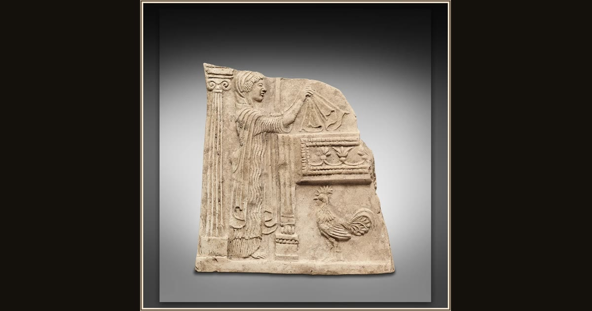

Votive Plaque (Pinax) with Persephone Making her Bridal Bed
Greek, South Italian (Locri Epizephyrii) · c. 490–450 BCE · Cleveland Museum of Art · Cleveland, USA
Someone pressed this small clay plaque as a gift for Persephone, the dread queen of the dead, at her shrine in southern Italy. It is her shadowy house that Odysseus enters when he sails to the land of the dead to question the ghost of Tiresias. Explore its pla